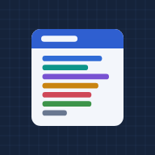

-

Study Portal
Domain guides, the cheat sheet, trap patterns and timed mock exams, with a plan that counts down to your exam date.
-
Flashcards
Concept cards and the exam questions with every option explained. Tap to reveal, swipe to move on.
Offline and on your phone
Each app keeps a copy of itself after your first visit, so it opens without a connection. To keep one on your phone, open it and add it to your home screen (on iPhone: Share, then Add to Home Screen).
Your progress stays in this browser on this device. The Study Portal can export it from Settings.